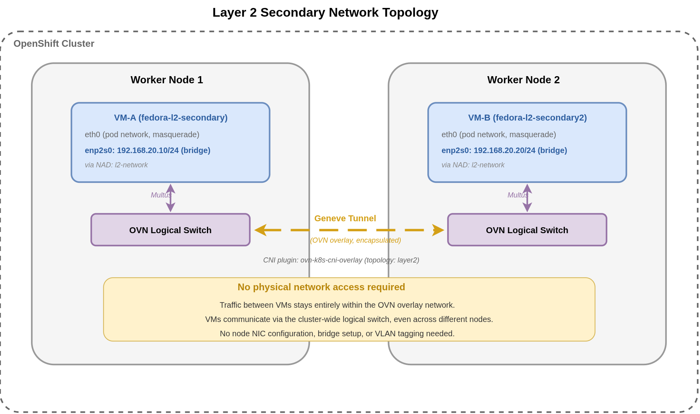

Configure Layer 2 Secondary Networks
Overview
This guide shows how to configure a layer2 secondary network to connect VirtualMachines via a cluster-wide logical switch.
Doing this allows VirtualMachines to continue using the default Pod network as the primary network, which is useful when the following conditions apply:
-
You only need simple connectivity between VMs (even on different nodes) within the same namespace.
-
You don’t need network isolation between VMs within the namespace.
-
You don’t need network connectivity between VMs to span across multiple namespaces.
-
You don’t require access to the physical network interfaces of the nodes in the cluster.
-
You don’t need to route ingress connectivity to the secondary network from the internet.
-
Lastly, you don’t require access to external networks from the secondary network.
Versions tested:
OpenShift 4.20,4.21
Prerequisites
-
OpenShift 4.20+ cluster with OpenShift Virtualization operator installed
-
Cluster admin access for creating NetworkAttachmentDefinition resources
-
CLI tools installed:
oc,virtctl -
Basic understanding of Kubernetes networking concepts
Creating a Namespace
The first step, if you have not already done so, is to create a namespace to house the NetworkAttachmentDefinition defining the network,
as well as the VirtualMachines you wish to attach to the network. It does not require any specific labels in this case.
You can easily create a new namespace using the oc binary, without the need to define any yaml:
oc create namespace example-l2-secondaryNow that the new namespace is created, it’s best to switch your current kube context (cluster and namespace that you’re currently working in) to the new namespace or project (in OpenShift terms).
oc project example-l2-secondaryWith the namespace created, and your current context set, proceed with Creating a NetworkAttachmentDefinition.
Creating a Network Attachment Definition
The second step is to create the NetworkAttachmentDefinition which will define the layer2 network within the namespace.
Create a new file named l2-network.nad.yaml and copy/paste the following yaml definition as the file contents, then save and close the editor:
apiVersion: k8s.cni.cncf.io/v1
kind: NetworkAttachmentDefinition
metadata:
name: l2-network
namespace: example-l2-secondary
spec:
config: |-
{
"cniVersion": "0.3.1",
"name": "l2-network",
"type": "ovn-k8s-cni-overlay",
"topology":"layer2",
"mtu": 1400,
"netAttachDefName": "example-l2-secondary/l2-network"
}Apply the NetworkAttachmentDefinition into the pre-defined namespace example-l2-secondary on the OpenShift cluster using oc apply:
oc apply -f l2-network.nad.yamlCheck to make sure that the NetworkAttachmentDefinition creation was successful. The l2-network must exist in the example-l2-secondary namespace before proceeding:
oc get net-attach-def l2-network -n example-l2-secondaryWith the l2-network created, proceed with Attaching VirtualMachines to the network.
Attaching VirtualMachines
The next step is to create your VirtualMachines and attach them to the layer2 network that was just created.
This is done in typical OpenShift (Kubernetes) fashion by creating a VirtualMachine API object and applying it to the cluster.
In this section, we’ll create two new VMs which will both be attached to the secondary l2-network.
Creating the First VirtualMachine
Below is the yaml definition for the first VirtualMachine (the key fields are explained further below).
Copy and paste content into a new file named fedora-l2-secondary.vm.yaml:
| The cloud-init password in this example is for demo purposes only. Always use a strong, unique password or SSH key authentication in production environments. |
apiVersion: kubevirt.io/v1
kind: VirtualMachine
metadata:
name: fedora-l2-secondary
labels:
app: fedora-l2-secondary
spec:
dataVolumeTemplates:
- metadata:
name: fedora-l2-secondary-root
spec:
sourceRef:
kind: DataSource
name: fedora
namespace: openshift-virtualization-os-images
storage:
resources:
requests:
storage: 30Gi
instancetype:
name: u1.large
preference:
name: fedora
runStrategy: Always
template:
metadata:
labels:
app: fedora-l2-secondary
spec:
domain:
devices:
interfaces:
- name: default
masquerade: {}
- name: secondary
bridge: {}
resources: {}
terminationGracePeriodSeconds: 180
networks:
- name: default
pod: {}
- name: secondary
multus:
networkName: l2-network
volumes:
- name: fedora-l2-secondary-root
dataVolume:
name: fedora-l2-secondary-root
- name: cloudinitdisk
cloudInitNoCloud:
userData: |
#cloud-config
user: fedora
password: fedora
chpasswd:
expire: False
networkData: |
version: 2
ethernets:
enp2s0:
addresses:
- 192.168.20.10/24|
From the above VM example
Regarding the fields in the above example (relative to domain.devices.interfaces - accepts a list of interface definitions, each with two fields defined:
networks - this is where to list networks used to connect interfaces, as with
volumes - there are two volumes defined, the |
You can create a new VirtualMachine on the OpenShift cluster (in the current namespace, example-l2-secondary) using oc create:
oc create -f fedora-l2-secondary.vm.yamlCheck that the fedora-l2-secondary VM is up and running in the example-l2-secondary namespace before proceeding. You may have to run the command a few times while in the Provisioning state:
oc get vm fedora-l2-secondary -n example-l2-secondary|
Troubleshooting
If the
To try and find the source of the issue, use |
Creating a Second VirtualMachine
Before we’re able to test, a second VM is required to establish connectivity across the secondary network.
Below is the yaml source definition for the second VirtualMachine.
Save the provided content into a file named fedora-l2-secondary2.vm.yaml.
Note that the only changes from the first VM are the name, IP address and root volume name.
apiVersion: kubevirt.io/v1
kind: VirtualMachine
metadata:
name: fedora-l2-secondary2
labels:
app: fedora-l2-secondary2
spec:
dataVolumeTemplates:
- metadata:
name: fedora-l2-secondary2-root
spec:
sourceRef:
kind: DataSource
name: fedora
namespace: openshift-virtualization-os-images
storage:
resources:
requests:
storage: 30Gi
instancetype:
name: u1.large
preference:
name: fedora
runStrategy: Always
template:
metadata:
labels:
app: fedora-l2-secondary2
spec:
domain:
devices:
interfaces:
- name: default
masquerade: {}
- name: secondary
bridge: {}
resources: {}
terminationGracePeriodSeconds: 180
networks:
- name: default
pod: {}
- name: secondary
multus:
networkName: l2-network
volumes:
- name: fedora-l2-secondary2-root
dataVolume:
name: fedora-l2-secondary2-root
- name: cloudinitdisk
cloudInitNoCloud:
userData: |
#cloud-config
user: fedora
password: fedora
chpasswd:
expire: False
networkData: |
version: 2
ethernets:
enp2s0:
addresses:
- 192.168.20.20/24Apply the VirtualMachine to the current namespace on the OpenShift cluster:
oc apply -f fedora-l2-secondary2.vm.yamlCheck that the second VM named fedora-l2-secondary2 is up and running in the example-l2-secondary namespace. Both VirtualMachines should be running prior to testing:
oc get vm fedora-l2-secondary2 -n example-l2-secondaryTesting the Secondary Network
Since the secondary network is layer2 only, and exists purely as a virtual network within the cluster and namespace, we must test connectivity from one VM to another.
The following resources must exist in the example-l2-secondary namespace before you can proceed with testing:
-
NetworkAttachmentDefinition:l2-network -
VirtualMachine:fedora-l2-secondary(secondary NIC IP address: 192.168.20.10) -
VirtualMachine:fedora-l2-secondary2(secondary NIC IP address: 192.168.20.20)
The simplest way to test is by connecting to the console on one VM (or optionally, both VMs) and pinging the other.
Access the console of the first VirtualMachine using the virtctl command and login as user:`fedora` with password:`fedora` (hit ENTER if no login prompt appears):
virtctl console fedora-l2-secondaryCheck the IP address of the VirtualMachine. The following command should return a static address of 192.168.20.10 for the enp2s0 interface:
ip addr showPing the fedora-l2-secondary2 (IP address: 192.168.20.20) VM from the console of the first VM. If you see replies, then the secondary network is operational (hit CTRL+C to cancel the ping):
ping 192.168.20.20To exit the VM console, hit CTRL+].
To cleanup all of the resources from this exercise, simply switch to a different namespace and delete the example-l2-secondary namespace:
oc project default
oc delete namespace example-l2-secondaryNetwork Topology
The following diagram illustrates how two VMs on different worker nodes communicate over a Layer 2 secondary network. Traffic flows through the OVN overlay via a Geneve tunnel between nodes, without requiring any physical network access or node-level NIC configuration.

The ovn-k8s-cni-overlay CNI plugin with layer2 topology creates a cluster-wide OVN logical switch. Multus attaches each VM’s secondary interface to this logical switch via a bridge connection. When VM-A on Node 1 sends traffic to VM-B on Node 2, OVN encapsulates the frames in a Geneve tunnel and delivers them through the cluster’s existing node-to-node network. The VMs see direct Layer 2 connectivity as if they were on the same physical switch, even though the underlying transport is an overlay.
Because Layer 2 secondary networks operate entirely within the OVN overlay, no NodeNetworkConfigurationPolicy (NNCP), bridge setup, or VLAN configuration is required on the cluster nodes. This makes Layer 2 the simplest secondary network option to deploy.
|
Business Use Cases
Layer 2 secondary networks are best suited for workloads that need simple, isolated VM-to-VM connectivity without external network access.
| Use Case | Description |
|---|---|
Internal east-west communication |
Database replication, message queues, or application clustering between VMs that need direct Layer 2 connectivity without exposing traffic outside the cluster. |
Development and test environments |
Isolated VM networks for testing multi-tier applications without requiring physical NIC access or network team involvement. |
Simple VM-to-VM connectivity |
Workloads where VMs need to reach each other on a private subnet but do not require access to external networks or the internet. |
Alternative to Linux bridges |
When no physical network integration is needed, Layer 2 overlay is simpler than configuring Linux bridges, which require node-level NNCP resources and physical NIC access. Choose Linux bridges when VMs must join an existing physical network segment. |
Summary
In this tutorial, you learned:
-
How to create a
NetworkAttachmentDefinitionwithlayer2topology using theovn-k8s-cni-overlayCNI plugin -
How to configure VirtualMachines with both a primary masquerade interface and a secondary bridge interface
-
How to assign static IP addresses on the secondary network using cloud-init
networkData -
How to verify Layer 2 connectivity between VMs on the same OVN-managed logical switch
-
When to use Layer 2 secondary networks versus other networking options like Linux bridges or localnet